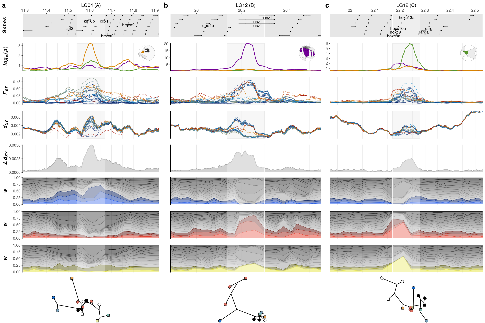
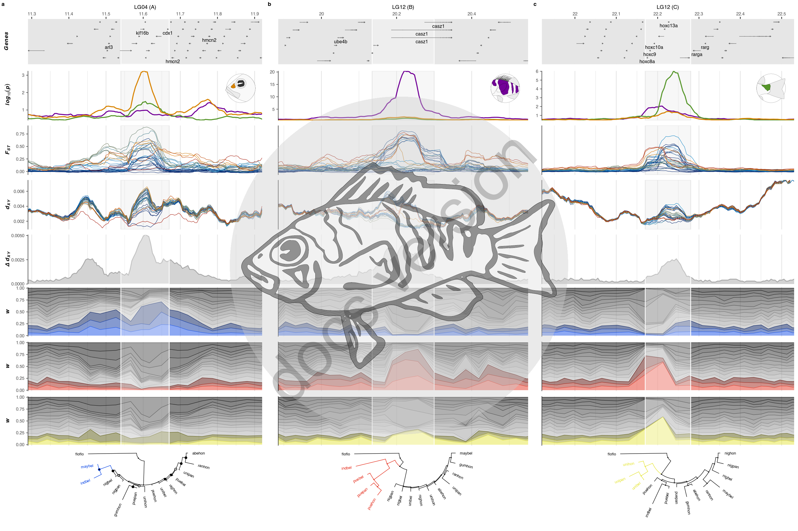
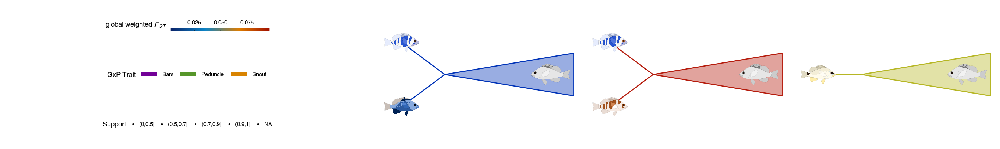
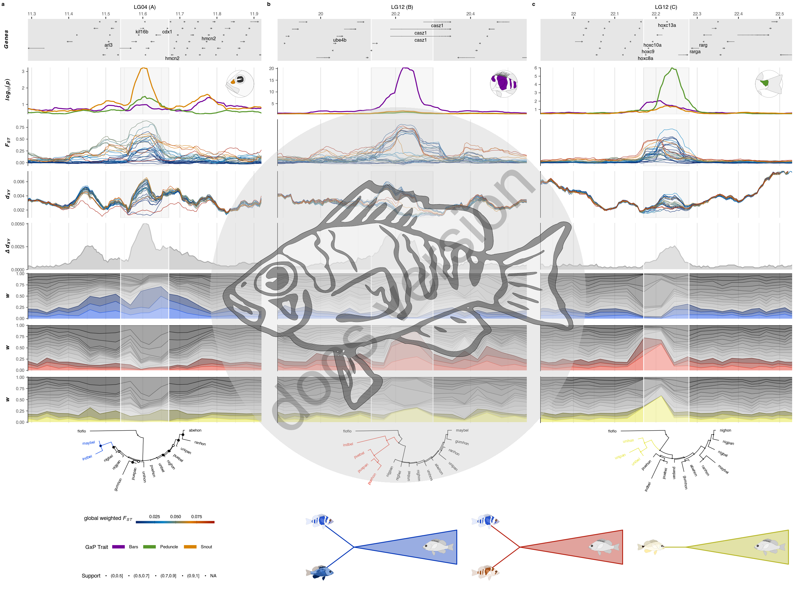

21 Figure 5
21.1 Summary
This is the accessory documentation of Figure 5.
The Figure can be recreated by running the R script plot_F5.R:
cd $BASE_DIR
Rscript --vanilla R/fig/plot_F5.R \
2_analysis/twisst/weights/ \
ressources/plugin/trees/ \
https://raw.githubusercontent.com/simonhmartin/twisst/master/plot_twisst.R \
2_analysis/summaries/fst_outliers_998.tsv \
2_analysis/dxy/50k/ \
2_analysis/fst/50k/ \
2_analysis/summaries/fst_globals.txt \
2_analysis/GxP/50000/ \
200 \
5 \
2_analysis/revPoMo/outlier_regions/21.2 Details of plot_F5.R
In the following, the individual steps of the R script are documented. It is an executable R script that depends on the accessory R package GenomicOriginsScripts, as well as on the packages hypoimg, hypogen, furrr, ggtext, ape, ggtree, patchwork, phangorn and igraph.
21.2.1 Config
The scripts start with a header that contains copy & paste templates to execute or debug the script:
#!/usr/bin/env Rscript
# run from terminal:
# Rscript --vanilla R/fig/plot_F5.R \
# 2_analysis/twisst/weights/ ressources/plugin/trees/ \
# https://raw.githubusercontent.com/simonhmartin/twisst/master/plot_twisst.R \
# 2_analysis/summaries/fst_outliers_998.tsv 2_analysis/dxy/50k/ \
# 2_analysis/fst/50k/ 2_analysis/summaries/fst_globals.txt \
# 2_analysis/GxP/50000/ 200 5 2_analysis/revPoMo/outlier_regions/
# ===============================================================
# This script produces Figure 5 of the study "Ancestral variation, hybridization and modularity
# fuel a marine radiation" by Hench, Helmkampf, McMillan and Puebla
# ---------------------------------------------------------------
# ===============================================================
# args <- c('2_analysis/twisst/weights/', 'ressources/plugin/trees/',
# 'https://raw.githubusercontent.com/simonhmartin/twisst/master/plot_twisst.R',
# '2_analysis/summaries/fst_outliers_998.tsv',
# '2_analysis/dxy/50k/', '2_analysis/fst/50k/',
# '2_analysis/summaries/fst_globals.txt',
# '2_analysis/GxP/50000/', 200, 5,
# "2_analysis/revPoMo/outlier_regions/")
# script_name <- "R/fig/plot_F5.R"The next section processes the input from the command line.
It stores the arguments in the vector args.
The needed R packages are loaded and the script name and the current working directory are stored inside variables (script_name, plot_comment).
This information will later be written into the meta data of the figure to help us tracing back the scripts that created the figures in the future.
Then we drop all the imported information besides the arguments following the script name and print the information to the terminal.
args <- commandArgs(trailingOnly = FALSE)
# setup -----------------------
library(GenomicOriginsScripts)
library(hypoimg)
library(hypogen)
library(furrr)
library(ggtext)
library(ape)
library(ggtree)
library(patchwork)
library(phangorn)
library(igraph)
cat('\n')
script_name <- args[5] %>%
str_remove(.,'--file=')
plot_comment <- script_name %>%
str_c('mother-script = ',getwd(),'/',.)
args <- process_input(script_name, args)#> ── Script: R/fig/plot_F5.R ────────────────────────────────────────────
#> Parameters read:
#> ★ 1: 2_analysis/twisst/weights/
#> ★ 2: ressources/plugin/trees/
#> ★ 3: https://raw.githubusercontent.com/simonhmartin/twisst/master/plot_twisst.R
#> ★ 4: 2_analysis/summaries/fst_outliers_998.tsv
#> ★ 5: 2_analysis/dxy/50k/
#> ★ 6: 2_analysis/fst/50k/
#> ★ 7: 2_analysis/summaries/fst_globals.txt
#> ★ 8: 2_analysis/GxP/50000/
#> ★ 9: 200
#> ★ 10: 5
#> ★ 11: 2_analysis/revPoMo/outlier_regions/
#> ────────────────────────────────────────── /current/working/directory ──The directories for the different data types are received and stored in respective variables. Also, we source an external r script from the original twisst github repository that we need to import the twisst data:
# config -----------------------
w_path <- as.character(args[1])
d_path <- as.character(args[2])
twisst_functions <- as.character(args[3])
out_table <- as.character(args[4])
dxy_dir <- as.character(args[5])
fst_dir <- as.character(args[6])
fst_globals <- as.character(args[7])
gxp_dir <- as.character(args[8])
twisst_size <- as.numeric(args[9])
resolution <- as.numeric(args[10])
pomo_path <- as.character(args[11])
pomo_trees <- dir(pomo_path, pattern = "155_pop")
source(twisst_functions, local = TRUE)Then, we define a buffer width. This is the space left and right of the \(F_{ST}\) outlier windows.
plan(multiprocess)
window_buffer <- 2.5*10^521.2.2 Data import
Then, we start with the data import. For the figure we are going to need:
- \(d_{XY}\) data
- genotype \(\times\) phenotype data
- \(F_{ST}\) data
- topology weighing data
- the positions of the genome annotations
- the positions of the \(F_{ST}\) outlier windows
- the group-level phylogeny data (revPoMo)
We start by importing \(d_{XY}\) by first listing all \(d_{XY}\) data files and then iterating the \(d_{XY}\) import function over the files.
# actual script =========================================================
# locate dxy data files
dxy_files <- dir(dxy_dir, pattern = str_c('dxy.*[a-z]{3}.*.', resolution ,'0kb-', resolution ,'kb.tsv.gz'))
# import dxy data
dxy_data <- tibble(file = str_c(dxy_dir, dxy_files)) %>%
purrr::pmap_dfr(get_dxy, kb = str_c(resolution, '0kb'))Next we iterate the genotype \(\times\) phenotype import function over the trait names Bars, Snout and Peduncle.
# set traits of interest for GxP
gxp_traits <- c('Bars', 'Snout', 'Peduncle')
# import GxP data
gxp_data <- str_c(gxp_dir,gxp_traits,'.lm.', resolution ,'0k.', resolution ,'k.txt.gz') %>%
future_map_dfr(get_gxp_long, kb = 50)Then, we define two sets of colors - one for the topology highlighting schemes and one for the traits of the genotype \(\times\) phenotype association.
# set topology weighting color scheme
twisst_clr <- c(Blue = "#0140E5", Bars = "#E32210", Butter = "#E4E42E")
# set GxP color scheme
gxp_clr <- c(Bars = "#79009f", Snout = "#E48A00", Peduncle = "#5B9E2D") %>%
darken(factor = .95) %>%
set_names(., nm = gxp_traits)Next, we compute the average genome wide \(d_{XY}\) and load the average genome wide \(F_{ST}\) values for all 28 pair wise species comparisons.
# compute genome wide average dxy
dxy_globals <- dxy_data %>%
filter(BIN_START %% ( resolution * 10000 ) == 1 ) %>%
group_by( run ) %>%
summarise(mean_global_dxy = sum(dxy*N_SITES)/sum(N_SITES)) %>%
mutate(run = fct_reorder(run,mean_global_dxy))
# import genome wide average fst
# and order population pairs by genomewide average fst
fst_globals <- vroom::vroom(fst_globals,delim = '\t',
col_names = c('loc','run_prep','mean_fst','weighted_fst')) %>%
separate(run_prep,into = c('pop1','pop2'),sep = '-') %>%
mutate(run = str_c(pop1,loc,'-', pop2, loc),
run = fct_reorder(run,weighted_fst))After this, we import the \(F_{ST}\) data by first listing all \(F_{ST}\) data files and then iterating the \(F_{ST}\) import function over the files.
# locate fst data files
fst_files <- dir(fst_dir, pattern = str_c('.', resolution ,'0k.windowed.weir.fst.gz'))
# import fst data
fst_data <- str_c(fst_dir, fst_files) %>%
future_map_dfr(get_fst, kb = str_c(resolution, '0k')) %>%
left_join(dxy_globals) %>%
left_join(fst_globals) %>%
mutate(run = refactor(., fst_globals),
BIN_MID = (BIN_START+BIN_END)/2)We then add the genome wide averages of \(F_{ST}\) and \(d_{XY}\) as new columns to the \(d_{XY}\) data. This will be used later for coloring the \(d_{XY}\) panel.
# order dxy population pairs by genomewide average fst
dxy_data <- dxy_data %>%
left_join(dxy_globals) %>%
left_join(fst_globals) %>%
mutate(run = refactor(dxy_data, fst_globals),
window = 'bold(italic(d[xy]))')Then, we summarize the \(d_{XY}\) data to compute \(\Delta d_{XY}\).
# compute delta dxy
data_dxy_summary <- dxy_data %>%
group_by(GPOS) %>%
summarise(scaffold = CHROM[1],
start = BIN_START[1],
end = BIN_END[1],
mid = BIN_MID[1],
min_dxy = min(dxy),
max_dxy = max(dxy),
mean_dxy = mean(dxy),
median_dxy = median(dxy),
sd_dxy = sd(dxy),
delta_dxy = max(dxy)-min(dxy))To only load the relevant twisst data, we first load the positions of the \(F_{ST}\) outlier regions. We also define a set of outliers of interest.
# load fst outlier regions
outlier_table <- vroom::vroom(out_table, delim = '\t') %>%
setNames(., nm = c("outlier_id","lg", "start", "end", "gstart","gend","gpos"))
# set outlier regions of interest
outlier_pick = c('LG04_1', 'LG12_3', 'LG12_4')Then we define a set of genes of interest. These are the ones, that later will be labeled in the annotation panel.
# select genes to label
cool_genes <- c('arl3','kif16b','cdx1','hmcn2',
'sox10','smarca4',
'rorb',
'alox12b','egr1',
'ube4b','casz1',
'hoxc8a','hoxc9','hoxc10a',
'hoxc13a','rarga','rarg',
'snai1','fam83d','mafb','sws2abeta','sws2aalpha','sws2b','lws','grm8')Next, we load the twisst data for both locations and list all species from Belize (This will be needed to calculate their pair wise distances for the topology highlighting).
# load twisst data
data_tables <- list(bel = prep_data(loc = 'bel'),
hon = prep_data(loc = 'hon'))
# set species sampled in belize
pops_bel <- c('ind', 'may', 'nig', 'pue', 'uni')Next, we import the group-level phylogenetic trees for the three focal outlier regions.
# load group-level phylogeny data
pomo_data <- str_c(pomo_path, pomo_trees) %>%
purrr::map_dfr(import_tree) %>%
mutate(rooted_tree = map2(.x = tree,.y = type, .f = root_hamlets))21.2.3 Plotting
Before the actual plotting, we are defining a list of outliers to be included within the final plots.
# set outlier region label
region_label_tibbles <- tibble(outlier_id = outlier_pick,
label = c('A','B','C'))We adjust the trait images to show the depicted trait in the same color it is also plotted within figure.
# load and recolor trait icons
trait_grob <- tibble(svg = hypoimg::hypo_trait_img$grob_circle[hypoimg::hypo_trait_img$trait %in% gxp_traits],
layer = c(4,3,7),
color = gxp_clr[gxp_traits %>% sort()])%>%
pmap(.f = hypo_recolor_svg) %>%
set_names(nm = gxp_traits %>% sort())
# recolor second bars-layer
trait_grob[["Bars"]] <- trait_grob[["Bars"]] %>% hypo_recolor_svg(layer = 7, color = gxp_clr[["Bars"]])The actual plotting starts with the visualizations of the group-level phylogenies which are plotted one by one:
p_pomo1 <- pomo_data$tree[[1]] %>%
midpoint() %>%
ggtree::ggtree(layout = "circular") %>%
rotate(node = 18) %>%
.$data %>%
dplyr::mutate(support = as.numeric(label),
support_class = cut(support, c(0, 50, 70, 90, 100)) %>%
as.character() %>%
factor(levels = c("(0,50]", "(50,70]", "(70,90]", "(90,100]"))) %>%
plot_tree(higl_node = 21,
angle_in = 168,
color = twisst_clr[["Blue"]],
xlim = c(-.015, .1),
open_angle = 168)
p_pomo2 <- pomo_data$tree[[2]] %>%
midpoint() %>%
ggtree::ggtree(layout = "circular") %>%
.$data %>%
dplyr::mutate(support = as.numeric(label) /100,
support_class = cut(support, c(0,.5,.7,.9,1)) %>%
as.character() %>%
factor(levels = c("(0,0.5]", "(0.5,0.7]", "(0.7,0.9]", "(0.9,1]"))) %>%
plot_tree(higl_node = 27,
color = twisst_clr[["Bars"]],
xlim = c(-.015,.065),
angle_in = 168,
open_angle = 168)
p_pomo3 <- pomo_data$tree[[3]] %>%
midpoint() %>%
ggtree::ggtree(layout = "circular") %>%
.$data %>%
dplyr::mutate(support = as.numeric(label) /100,
support_class = cut(support, c(0,.5,.7,.9,1)) %>%
as.character() %>%
factor(levels = c("(0,0.5]", "(0.5,0.7]", "(0.7,0.9]", "(0.9,1]"))) %>%
plot_tree(higl_node = 28,
color = twisst_clr[["Butter"]],
xlim = c(-.01, .053),
angle_in = 168,
open_angle = 168)The three phylogenies are combined into a single list.
plot_list <- list(p_pomo1, p_pomo2, p_pomo3)Then, we iterate the main plotting function over all selected \(F_{ST}\) outlier windows merge the resulting plot list with the prepared phylogenies and combine the resulting plots into a multi-panel plot.
# compose base figure
p_single <- outlier_table %>%
filter(outlier_id %in% outlier_pick) %>%
left_join(region_label_tibbles) %>%
mutate(outlier_nr = row_number(),
text = ifelse(outlier_nr == 1, TRUE, FALSE),
trait = c('Snout', 'Bars', 'Peduncle')) %>%
pmap(plot_curtain, cool_genes = cool_genes, data_tables = data_tables) %>%
c(., plot_list) %>%
cowplot::plot_grid(plotlist = ., nrow = 2,
rel_heights = c(1, .18),
labels = letters[1:length(outlier_pick)] %>% project_case(),
label_size = plot_text_size)
At this point all that we miss is the figure legend. So, for the \(F_{ST}\), \(d_{XY}\) and genotype \(\times\) phenotype color schemes we create two dummy plots from where we can export the legends. We combine those two classical color legends with a legend for the phylogeny support values into what will become the left column of the legend.
# compile legend
# dummy plot for fst legend
p_dummy_fst <- outlier_table %>% filter(row_number() == 1) %>%
purrr::pmap(plot_panel_fst) %>%
.[[1]] + guides(color = guide_colorbar(barheight = unit(3, "pt"),
barwidth = unit(100, "pt"),
label.position = "top",
ticks.colour = "black"))
# dummy plot for gxp legend
p_dummy_gxp <- outlier_table %>% filter(row_number() == 1) %>% purrr::pmap(plot_panel_gxp, trait = 'Bars') %>% .[[1]]
# fst legend
p_leg_fst <- (p_dummy_fst+theme(legend.position = 'bottom')) %>% get_legend()
# gxp legend
p_leg_gxp <- (p_dummy_gxp+theme(legend.position = 'bottom')) %>% get_legend()
# create sub-legend 1
p_leg_pomo <- ((midpoint(pomo_data$tree[[1]]) %>%
ggtree(layout = "circular") %>%
.$data %>%
mutate(support = as.numeric(label) /100,
support_class = cut(support, c(0,.5,.7,.9,1)) %>%
as.character() %>%
factor(levels = c("(0,0.5]", "(0.5,0.7]", "(0.7,0.9]", "(0.9,1]")))) %>%
conditional_highlight(tree = .,
higl_node = 21,
highl = FALSE,
support_guide = TRUE) +
theme(text = element_text(size = plot_text_size),
legend.position = "bottom") ) %>%
get_legend()
p_leg1 <- cowplot::plot_grid(p_leg_fst,
p_leg_gxp,
p_leg_pomo,
ncol = 1)Then, we construct the topology highlighting color legend. We first define the three highlighting scenarios, the involved species and their base color and then iterate the legend plotting functions over those configurations. The resulting legend elements are then combined to create the right side of the figure legend and the two main legend elements are combined.
# create sub-legend 2 (phylogeny schematics)
p_leg2 <- tibble(spec1 = c('indigo', 'indigo','unicolor'),
spec2 = c('maya', 'puella',NA),
color = twisst_clr %>% unname() %>% darken(.,factor = .8),
mode = c(rep('pair',2),'isolation')) %>%
future_pmap(plot_leg) %>%
cowplot::plot_grid(plotlist = .,
nrow = 1)
# create sub-legend 3
p_leg <- cowplot::plot_grid(p_leg1,
p_leg2,
nrow = 1,
rel_widths = c(.6, 1))
After adding the legend to the main part, Figure 5 is complete.
# finalize figure
p_done <- cowplot::plot_grid(p_single, p_leg,
ncol = 1,
rel_heights = c(1, .17))
Finally, we can export Figure 5.
# export figure
hypo_save(plot = p_done, filename = 'figures/F5.pdf',
width = f_width,
height = f_width * .93,
comment = script_name,
device = cairo_pdf)